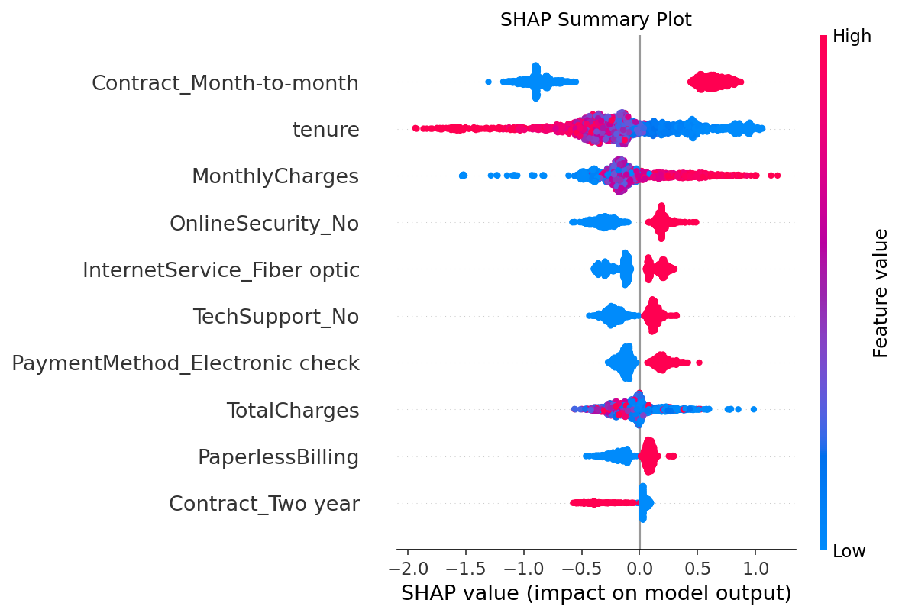
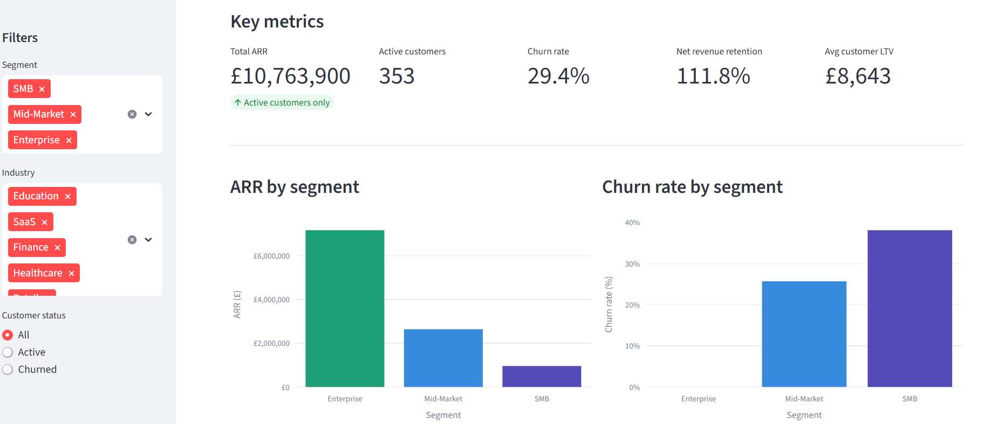
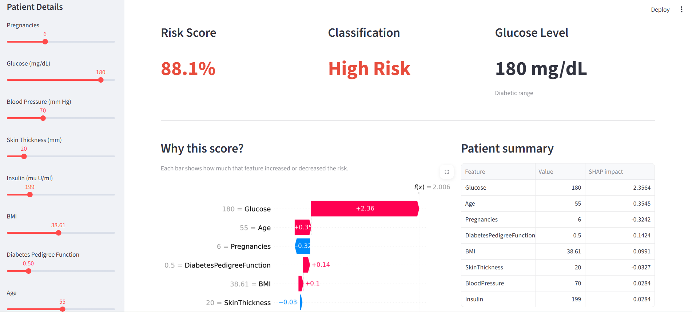

MSc Data Science & AI (Distinction, University of Liverpool). I build robust data pipelines, predictive ML systems, and analytical dashboards that turn complex data into reliable decisions.
I'm a Data Scientist and Analyst with an MSc (Distinction) from the University of Liverpool, specialising in end-to-end ML pipelines, ETL workflows, and data validation systems across complex, heterogeneous datasets.
My work spans the full data stack — from cleaning and reconciling multi-source data to building predictive models with SHAP explainability, and presenting findings through interactive BI dashboards in Power BI, Tableau, and Streamlit.
I've worked in commercial analytics roles, built revenue forecasting systems, and developed automated data quality frameworks. Keen interest in applying data science to health, population research, and operational decision-making — including healthcare risk scoring and clinical explainability.

End-to-end churn prediction pipeline on 10,000+ customer records. SHAP explainability translates model outputs into actionable business insights. Includes A/B testing for retention ROI and Docker-automated retraining with drift monitoring.
Automated ETL pipeline processing 20,000+ records across text, categorical, and time-series data. Hybrid semantic search using MPNet + FAISS with BM25 keyword ranking. Flan-T5 generative answering with a Streamlit BI reporting dashboard.

End-to-end pipeline validating 500+ customer records, surfacing ARR, churn rate, NRR, and LTV across segments. Six interactive chart types including cohort retention and funnel analysis with real-time filters.

End-to-end ML pipeline predicting diabetes risk across 768 clinical patient records. SHAP explainability identifies key risk drivers per patient. SQL analysis revealed Senior + Obese patients carry a 64.9% diabetes rate — the highest risk segment. Deployed as an interactive Streamlit dashboard.
Open to full-time Data Science, Data Analyst, and ML Engineering roles across the UK. Available immediately. Happy to discuss on-site, hybrid, or remote positions.
Download my full CV including detailed project descriptions, technical skills, and work experience.
↓ Download CV (PDF)